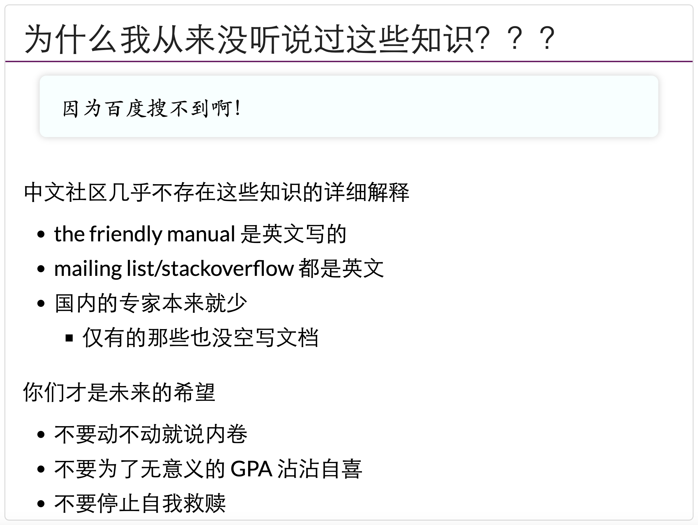
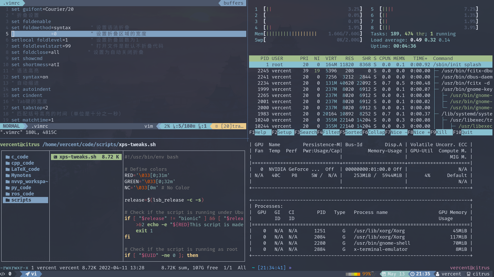
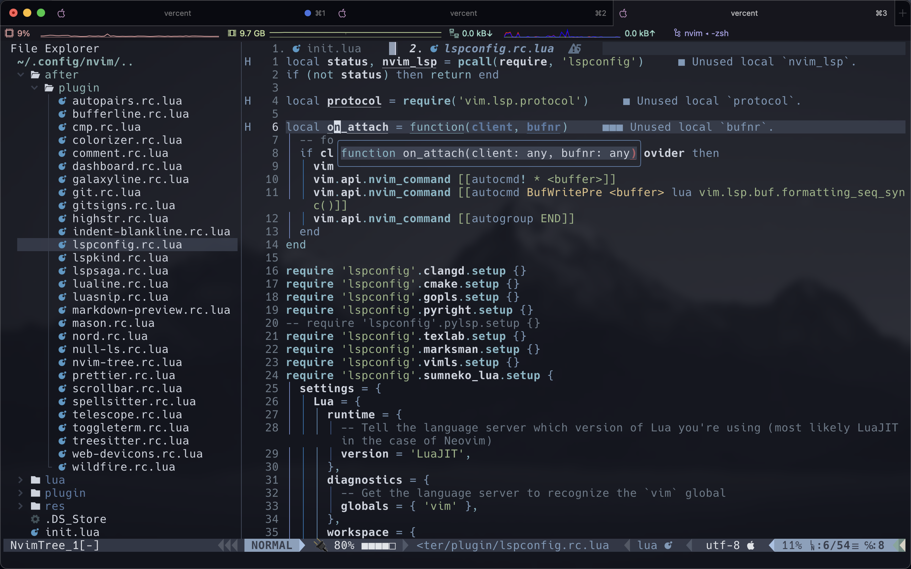
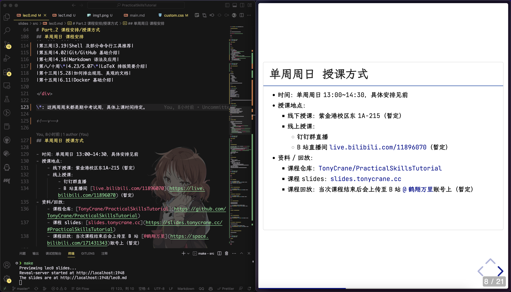
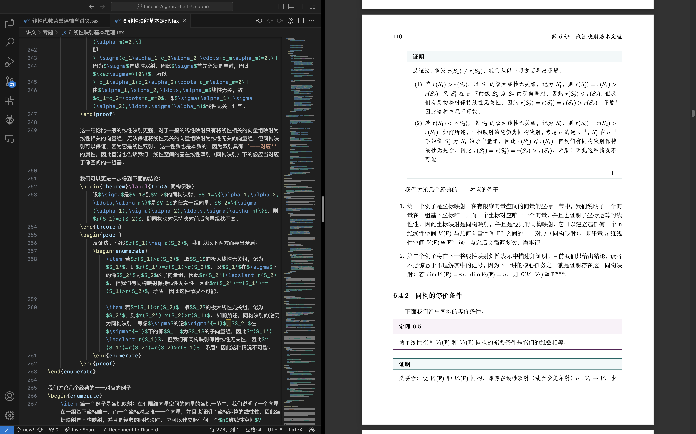
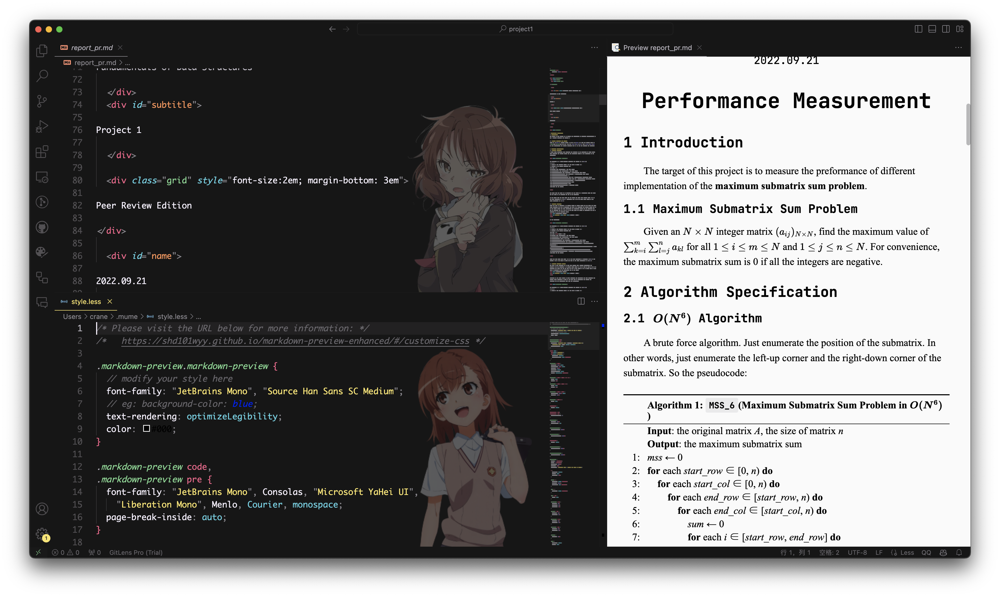
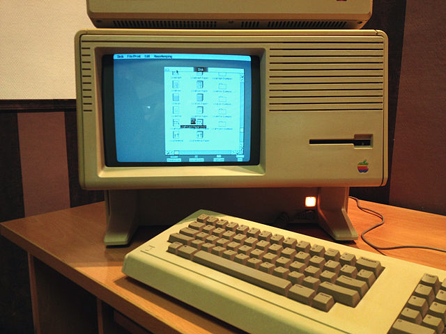
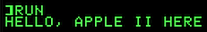
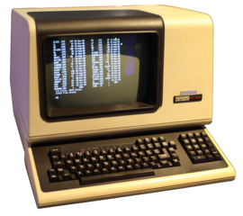
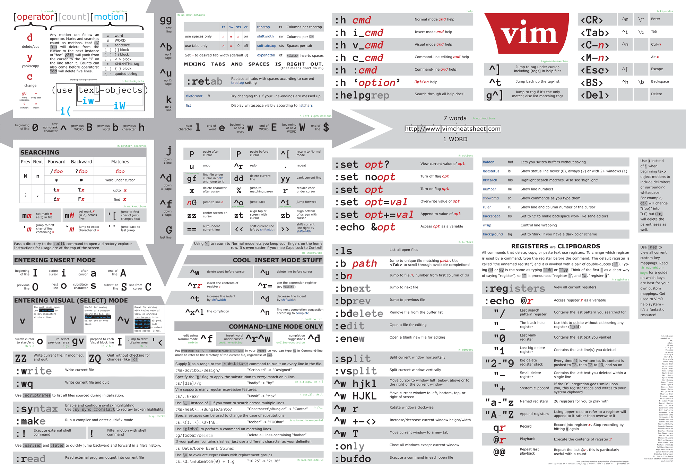

<div class="middle center"> <div style="width: 100%"> # I/O 茶话会 零 <hr/> # 成为 CS 人的第一步 By [I/O Club](https://github.com/io-club) @阿兹 </div> </div> <!--s--> <div class="middle center"> <div style="width: 100%"> # Part.1 背景 </div> </div> <!--v--> ## 为什么会有这此分享？ - "The Missing Semester of Your CS Education": [MIT 6.null](https://missing.csail.mit.edu/) > 大学里的计算机课程通常专注于讲授从操作系统到机器学习这些学院派的课程或主题，而对于如何精通工具这一主题则往往会留给学生自行探索。 > > 因此，花时间打磨使用这些工具的能力并能够最终熟练地、流畅地使用它们是非常有必要的。 > > 精通这些工具不仅可以帮助您更快的使用工具完成任务，并且可以帮助您解决在之前看来似乎无比复杂的问题。 <!--v--> ## 为什么会有这此分享？ - 南京大学[蒋炎岩](https://jyywiki.cn/) 2020 秋《计算机系统基础》「链接与加载选讲」 - https://jyywiki.cn/ICS/2020/slides/8.slides.html#/4/1 <!-- <div style=" margin-top: 10px; margin-right: 10px;" markdown="1">  --> <br/> - “你们有没有想过为什么你们上的这么痛苦” - “很长时间里面你们都被困在墙内” - “你们 missed 可能要比 MIT 的那个还要再多一点” - “另外一个就是你们的悲喜在很多情况下是在 GPA 上的” </div> <!--v--> ## 你将有什么收获？ - 掌握一系列常用、好用的工具（包括 Git、Vim、Shell、Markdown 等） - 增强 CS 专业技能，让你看起来更专业、更像一个 CS 人 - 推荐阅读：[「如何让自己看上去、闻上去都像一个 CS 人」](https://turing2022.tonycrane.cc/cser/) - 树立起一个 CS 人的思维方式： - 学会自己解决问题、自己 debug - 学会探索计算机世界、广泛自学的方法 - 构建一个属于自己、干净、高效的工作环境和工作流程 - 为将来更多计算机课程的学习打下坚实基础、打通道路 - 培养对 CS 的兴趣 - ... <!--s--> <div class="middle center"> <div style="width: 100%"> # Part.2 内容前瞻 </div> </div> <!--v--> ## Terminal/Shell - 用命令行控制电脑 <div style="text-align: center;">  </div> <!--v--> ## Vim - 命令行中的文本编辑器 <div style="text-align: center; margin-top: 0.5em;">  </div> <!--v--> ## Git - 版本控制工具 <div style="text-align: center;"> <img src="lec0/git.gif" width="85%" style="margin: 0 auto;"> <p style="margin-top: 0.1em;">lazygit</p> </div> <!--v--> ## GitHub - 全球最大的代码托管网站 <div style="text-align: center;"> </div> <!--v--> ## Markdown - 轻量级文本标记语言 <div style="text-align: center; margin-top: 0.5em;">  </div> <!--v--> ## LaTeX - 纯代码式文档排版软件 <div style="text-align: center;">  </div> <!--v--> ## 文档排版基础教程 / 样式编写基础 <div style="text-align: center; margin-top: 0.5em;">  </div> <!--s--> <div class="middle center"> <div style="width: 100%"> # Part.3 在开始之前 </div> </div> <!--v--> ## 了解你自己的电脑 - Linux - 应该有管理好自己电脑的信息 - 权限？sudo？做一切事情之前要完全清楚自己在干什么 - 环境变量是否干净？命令行环境加载？ - 各种语言/工具的环境是否整洁、完备？ - Windows - 关于 C 盘？文件夹整理是否清晰？ - 有没有安装“垃圾软件”？下载应用记得官网，避免“下崽器” - macOS - 参考 Linux 和 Windows - 命令行操作逻辑和 Linux 非常类似 <!--v--> ## 如何学习？ - 环境： - 推荐使用 Linux/macOS - Windows 推荐安装 WSL 或虚拟机 - 牢记两个缩写： - RTFM: Read The F**king Manual - STFW: Search The F**king Web - 百度搜索、百度知道、百度百科、CSDN？❌ - 必应搜索、谷歌搜索、Wikipedia、GitHub、StackOverflow！✅ - 一定要自己进行实操❗️❗️❗️ - 还没有 GitHub 账号❓赶紧注册 - 不知道怎么运用魔法来上网❓这是不能公开碰的滑梯 <!--v--> ## 树立硅基生物思维 - 计算机专业的目的：了解计算机上万物运行的逻辑 > 计算机一定是对的，未经测试的代码一定是错的 - 一切结果的产生都是有原因的（没有那么多玄学问题） - 学会自己 debug：逐层抓问题的直接原因，对逐个可能进行排查 体现的 CS 人的“味道”： - 折腾环境和工具，构建自己熟悉且方便快捷的工作环境与工作流程 - 一切重复性工作都可以交给计算机自动化完成 - 没有合适的工具？<span class="heti-skip">自己写一个.jpg</span> - 用命令行控制电脑，用代码控制一切 - 版本控制，开源共享，共同合作 - 遇到问题可以自己 STFW RTFM RTFSC 进行 debug 分析解决 <!--s--> ## 本节内容 - 了解 Linux - 区分 Shell 与 Terminal - 掌握 Shell 基础命令，包括文件与目录操作 - 了解 Shell 的进阶概念：重定向、管道等 - 了解 vim 编辑器的基本用法，以及如何自行学习 - 了解一些常用的命令行工具 <!--s--> <!-- .slide: data-background="lec1/background.png" --> <div class="middle center"> <div style="width: 100%"> # Part.ε 背景 ♿️♿️♿️ 五分钟了解 Linux ♿️♿️♿️ </div> </div> <!--v--> <!-- .slide: data-background="lec1/background.png" --> ## 主流计算机操作系统 - Microsoft Windows (1985.11.20) - macOS (2001.3.24) - Linux (1991.9.17) <div class="fragment"> > Linux：我会为你提供一切必要的工具。请你为自己所敲的每一行命令负责。 > > macOS：我会尽可能地保护你。你可以不要我的保护，但若如此，请你为自己所敲的每一行命令负责。 > > Windows：我是你妈 </div> <!--v--> <!-- .slide: data-background="lec1/background.png" --> ## 为什么不用 Windows？ - 臃肿，历史包袱太重 - 家庭版？旗舰版？专业版？企业版？专业工作站版？ - 适合使用，不适合开发 - 环境变量？缺 dll 文件？包管理器？ - 闭源商业付费软件 - 兼容性 - Not software, but hardware - 稳定性 - <span style="background-color: #0b61cd; color: white;">你的电脑遇到问题，需要重新启动。你可以重新启动。</span> - 安全性 - 永恒之蓝（[CVE-2017-0144](https://www.cve.org/CVERecord?id=CVE-2017-0144)） - 远程桌面任意代码执行（[CVE-2019-0708](https://www.cve.org/CVERecord?id=CVE-2019-0708)） - 错误报告服务权限提升（[CVE-2023-36874](https://www.cve.org/CVERecord?id=CVE-2023-36874)） Note: 作为 CS 人 注册表 1991 Windows 3.1 s390x? armhf? ppc64? <!--v--> <!-- .slide: data-background="lec1/background.png" --> ## <ruby>图形化<rp>（</rp><rt>GUI</rt><rp>）</rp></ruby>的前世今生  - (1973) Xerox PARC 研究小组：Xerox Alto - (1983) Steve Jobs “拿”来：Apple Lisa - (1984) X.Org 基金会：X 窗口系统（X11） - (1985) 微软：Windows 1.0 [图片来源：Álvaro Ibáñez, CC BY 2.0, Wikimedia](https://commons.wikimedia.org/wiki/File:Apple_Lisa_(Little_Apple_Museum)_(8032162544).jpg) <div class="fragment"> What before? **D**isk **O**perating **S**ystems  - (1978) Apple DOS - (1981) MS-DOS </div> <div class="fragment"> What after? 百花齐放 - Aqua, GNOME, KDE, LXDE, Xfce, ... Note: Windows 1.0 is a GUI for DOS Aqua is GUI of macOS </div> <!--v--> <!-- .slide: data-background="lec1/background.png" --> ## 为什么用 Linux？ <div style="text-align: center;"> <img src="lec1/linus-torvald-first-linux-email.png" width="65%" style="margin: 0 auto;"> [comp.os.minix](https://groups.google.com/g/comp.os.minix/c/dlNtH7RRrGA/m/24ODVoLfAgAJ), 1991.8.25 </div> <!--v--> <!-- .slide: data-background="lec1/background.png" --> ## 为什么用 Linux？ - 内核开源，社区维护 - Android OS - [torvalds/linux](https://github.com/torvalds/linux) - Free - as in *Free Beer* and *Free Speech* - 轻量级 - Alpine Linux 的 Docker 镜像仅 7 MB - 稳定性 - [亲手造成的运维事故：在 Live CD 环境下部署并运行了 8 个月](https://v2ex.com/t/974678) - 兼容性 - 树莓派等单板计算机 - 最不极端的一集：[在 Arduino Uno 上运行 Linux Kernel](https://hackaday.com/2023/10/13/because-you-can-linux-on-an-arduino-uno/)，主频 700 Hz <div class="fragment"> - ~~看着比 Windows professional 到不知道哪里去了~~ </div> <!--v--> <!-- .slide: data-background="lec1/background.png" --> ## 主流的 Linux 发行版 - [Slackware](http://www.slackware.com)：历史最悠久的发行版 - [Debian](https://www.debian.org)：历史第二悠久的发行版 - [Arch Linux](https://archlinux.org)：可高度自定义的发行版 - [Ubuntu](https://ubuntu.com)：基于 Debian，最广泛使用的发行版 - [Deepin](https://www.deepin.org)：基于 Debian 的国产操作系统 - [Red Hat Enterprise Linux](https://redhat.com/rhel/)：基于 CentOS 的商业发行版 - [Kali Linux](https://www.kali.org)：基于 Debian，面向安全工作者的发行版 <br> <div class="fragment"> 太多了，我该选哪个？ </div> <!--s--> <!-- .slide: data-background="lec1/background.png" --> <div class="middle center"> <div style="width: 100%"> # Part.a 什么是 Shell？ </div> </div> <!--v--> <!-- .slide: data-background="lec1/background.png" --> ## Are you a Shell? - 一个黑黑的窗口？ - 一个输入奇怪命令的地方？ - 一个看起来很高级很黑客的界面？ <div class="fragment"> ❌ 这些都不是 Shell ❌ </div> <div class="fragment"> 这些描述所形容的窗口其实是 Terminal [What people think programming is vs. how it actually is](https://youtu.be/HluANRwPyNo) </div> <!--v--> <!-- .slide: data-background="lec1/background.png" --> ## 什么是 Terminal - 起源 > <span class="serif">"end point of a railway line," 1888, from terminal (adj.); **sense of "device for communicating with a computer" is first recorded 1954.** Earlier "final part of a word" (1831).</span> > > -- [在线语源学词典 (Online Etymology Dictionary)](https://www.etymonline.com/word/terminal)  - 早期计算机没有桌面环境，唯一的交互方式是键盘 - 用于输入数据，运行程序，并获得输出的“终端” [图片来源：Gorthmog, CC BY-SA 4.0, Wikimedia](https://commons.wikimedia.org/wiki/File:DEC_VT100_terminal_transparent.png) <!--v--> <!-- .slide: data-background="lec1/background.png" --> ## 什么是 Terminal - 现今 - Terminal Emulator，模拟传统终端的行为 - 一个应用程序，提供了一个窗口，和输入输出交互的功能 - 内部运行的是 Shell，Shell 才是执行命令得到输出的东西 <div class="fragment"> 都有什么常见的 Terminal 呢？ </div> <div class="fragment"> - **Windows**：Windows Terminal（推荐） - **Linux**：Gnome Terminal、Konsole、LXTerminal 等 - **macOS**：Terminal.app、iTerm2（推荐）等 - 跨平台： - [Alacritty](https://alacritty.org)：基于 Rust 开发 - [Warp](https://warp.dev)：基于 Rust 开发 - [Hyper](https://hyper.is)：基于 Electron 开发 - ... </div> <!--v--> <!-- .slide: data-background="lec1/background.png" --> ## So what is a Shell? - “壳层”，也是一个程序，是用户与系统内核交互的界面 - 负责接收并解析输入，交给更底层（操作系统）来执行，并返回输出 <div class="fragment"> 都有什么常见的 Shell 呢？ </div> <div class="fragment"> - Windows 下：cmd.exe、PowerShell 5 - \*nix 下： - **sh**：Bourne Shell，最早、最经典的 shell - **bash**：Bourne Again Shell，最常用的 shell - 大部分 Linux 发行版的默认 shell - **zsh**：Z Shell，功能强大、可高度自定义的 shell - macOS Catalina 起成为默认 shell - **fish**：Friendly Interactive Shell，开箱即用、全平台的 shell - <ruby>ash<rp>(</rp><rt>Almquist Shell</rt><rp>)</rp></ruby>, <ruby>csh<rp>(</rp><rt>C Shell</rt><rp>)</rp></ruby>, <ruby>ksh<rp>(</rp><rt>Korn Shell</rt><rp>)</rp></ruby>, nushell, <ruby>pwsh<rp>(</rp><rt>PowerShell 7</rt><rp>)</rp></ruby>, xonsh, ... </div> Note: xonsh: conch <!--v--> <!-- .slide: data-background="lec1/background.png" --> ## Shell 与 Terminal - Terminal 从用户获取输入，然后传递给 Shell，等待 Shell 处理完后，将结果再传递回用户（显示在屏幕上） - Shell 从 Terminal 拿到输入指令，解析后交给操作系统执行，然后将结果返回给 Terminal 一些例子： - \*nix 系统下，用户默认的 shell 可以随意更换 - Ctrl-C 到底是复制还是中断程序？ - 和 Shell 无关，是 Terminal 的行为 - 比如 macOS 上 iTerm2 就可以随意更改按键的这些行为 - 如果定义了 `^C` 应该复制，那么 Terminal 就会直接复制内容到剪贴板 - 如果定义了 `^C` 应该中断程序，那么 Terminal 就告诉 Shell，Shell 再通过 SIGINT 信号通知内核中断程序 <!--v--> <!-- .slide: data-background="lec1/background.png" --> ## 为什么要用命令行？它能做什么？ - 命令行也是一种操作计算机的方式，理论上可以做任何事情 - 可以让你手在键盘上就能控制电脑，而不需要鼠标点来点去 - 在没有显示器的机器上（例如通过 ssh 连接服务器），只能通过命令行操作 一个夸张的例子：你甚至可以在命令行中查看网页！[fathyb/carbonyl](https://github.com/fathyb/carbonyl) <div style="text-align: center;"> <img src="lec1/img1.png" width="65%" style="margin: 0 auto;"> </div> Note: 不考虑 VNC 等远程桌面 <!--v--> <!-- .slide: data-background="lec1/background.png" --> ## 为什么要用命令行？它能做什么？ 别再用 Dev-C++ 写程序了，尽早使用 VSCode 与命令行 gcc ```shell $ cat a.c #include <stdio.h> int main(void) { puts("Hello world!"); } $ gcc a.c -o a $ ./a Hello world! ``` 建议熟读并背诵：《谈谈如何让自己看上去、闻上去都像一个 CS 人》[2022](https://turing2022.tonycrane.cc/cser/) <!--v--> <!-- .slide: data-background="lec1/background.png" --> ## \* 关于 zsh 的一些推荐配置 - oh-my-zsh：<https://ohmyz.sh>，一个 zsh 的配置框架，支持主题、插件等配置 <blockquote class="serif">Oh My Zsh will not make you a 10x developer...but you may feel like one!</blockquote> - Powerlevel10k（p10k）：一个 oh-my-zsh 的主题，配置简单，美观 - 插件： - git：oh-my-zsh 自带插件，提供 git 相关的自动补全与 alias - sudo：oh-my-zsh 自带插件，按两次 Esc 自动添加 sudo - z：oh-my-zsh 自带插件，快速跳转到曾经跳转过的目录 - zsh-autosuggestions：自动提示输入过的历史命令 - zsh-syntax-highlighting：命令语法高亮 - ... 具体安装方法等可参考：<https://note.tonycrane.cc/cs/tools/shell/> <!--s--> <!-- .slide: data-background="lec1/background.png" --> <div class="middle center"> <div style="width: 100%"> # Part.b 基础 Shell 命令 </div> </div> <!--v--> <!-- .slide: data-background="lec1/background.png" --> ## 路径相关命令 - pwd：获取当前路径 (print working directory) - cd *path*：切换路径 (change directory) - *path* 可以是“相对路径”或者“绝对路径” - *path* 中 `~` 代表 home，`.` 代表当前路径，`..` 代表上一级路径 <br> <div class="fragment"> 如何从 `/home/45gfg9/` 进入 `/usr/bin/` - 绝对路径：`cd /usr/bin` - 相对路径：`cd ../../usr/bin` </div> <div class="fragment"> 如何从 `/usr/` 进入 `/usr/games/` - 绝对路径：`cd /usr/games` - 相对路径：`cd games` 或者 `cd ./games` </div> <!--v--> <!-- .slide: data-background="lec1/background.png" --> ## 文件/目录操作命令 - ls：列出当前路径下的文件和目录 - `-a`：列出所有文件和目录，包括隐藏文件 - `-l`：列出详细信息（文件权限，大小，修改时间，...） - touch *file*：创建一个文件 - mkdir *dir*：创建一个目录 - cp *src* *dst*：复制文件或目录 - -r：递归复制目录 - mv *src* *dst*：移动文件或目录（重命名） - rm <em>files...</em>：删除文件 - -r：递归删除目录；-f：强制删除 - find *path* -name *pattern*：在 *path* 下查找文件名匹配 *pattern* 的文件 Note: Windows Folder, \*nix Directory <!--v--> <!-- .slide: data-background="lec1/background.png" --> ## 文件内容查看命令 - cat <em>files...</em>：输出与拼接文件 - -n：带行号输出 - head *file*：输出 *file* 前 10 行 - -n *lines*：输出 *lines* 行 - tail *file*：输出 *file* 后 10 行 - -n *lines*：输出 *lines* 行 - more/less *file*：分页输出 *file* 内容 - 空格翻页，回车下一行，q 退出 - `less` 的功能更多，比如查找，更好的翻页等，用法见 `less --help` - hexdump *file*：以十六进制输出文件内容 - -C：并排输出十六进制与 ASCII - -n *N*：输出前 *N* 个字节 <!--v--> <!-- .slide: data-background="lec1/background.png" --> ## 其他命令 - man：查看命令文档（manual） - echo：输出字符串（常配合重定向/管道使用） - whoami：获取当前用户 - whereis/which/whence：查找命令所在位置 - clear：清屏 - chmod：更改文件权限 - ps：显示进程信息 - date：获取当前日期时间 - kill：杀死进程（向进程发送信号） - grep：搜索文件内容（常配合重定向/管道使用） - diff：比较文件/目录内容 - curl：发送 HTTP 请求；wget：下载文件 - ... <!--v--> <!-- .slide: data-background="lec1/background.png" --> ## 重定向 - 即文件流重定向 - 三种流：stdin 标准输入流，stdout 标准输出流，stderr 标准错误流 - 如何更便捷地将输出存入文件/将文件内容作为程序输入？通过重定向 - 通过 > *file* 将 stdout 重定向到文件，通过 < *file* 将文件重定向到 stdin - 通过 2> *file* 将 stderr 重定向到文件 - 2 是什么意思？stderr 的文件描述符 - 两个右箭头（大于号）>> 表示追加模式，即不覆盖原文件，而是追加到文件末尾 - 通过 &> *file* 将 stdout 和 stderr 都重定向到文件 <div class="fragment"> 常见用法： - echo "Hello world" > *file*：将字符串 Hello world 写入 *file* - cat *file1* *file2* > *file3*：将 *file1* 和 *file2* 拼接，输出到 *file3* - diff *file1* *file2* > *file3*：将 *file1* 和 *file2* 的差异写入 *file3* - ./a.out < *file*：将 *file* 作为 a.out 的输入 </div> <!--v--> <!-- .slide: data-background="lec1/background.png" --> ## 管道 - 通过管道（pipe）可以将一个命令的输出作为另一个命令的输入 - 使用管道操作符 |，将左侧命令的 stdout 连接到右侧命令的 stdin - 通过管道可以将多个命令连接起来，形成一个命令序列，可以通过一行命令来完成相对复杂的操作（e.g. [SadServers](https://sadservers.com) Saskatoon） ```bash $ cat /home/admin/access.log | cut -d ' ' -f 1 | sort | uniq -c | sort | tail -n 1 ``` - 复杂命令看不懂？推荐 [explainshell](https://explainshell.com) 常见用法： - *some cmd* | tail -n *lines*：只输出最后 *lines* 行 - *some cmd* | less：分页输出 - *some cmd* | grep *pattern*：在输出中查找匹配 *pattern* 的行 - 与 cut / sort / uniq / awk 等命令搭配，处理文本数据 - ... <!--v--> <!-- .slide: data-background="lec1/background.png" --> ## 环境变量 - 记录了系统信息的变量，可供程序读取 - 通过 echo $*var* 来输出某一环境变量的值，`env` 命令查看所有环境变量 - 一个关于环境变量和 shell 命令执行的例子 - 🤔 命令是什么（例如 `ls`）？ - -> 绝大部分都是可执行文件（`/bin/ls`），执行命令就是执行程序 - 🤔 为什么 shell 可以只通过 `ls` 就找到 `/bin/ls` 这个可执行文件？ - -> 在 `PATH` 环境变量中查找 - 🤔 为什么一定要用 ./a.out 而不是 a.out 来执行程序？ - -> 因为 .（即当前目录）并不在 `PATH` 变量中 - 设置环境变量 - export *var*=*value*：设置环境变量 - 仅在当前执行的 shell 中有效。如何持久化？写入配置文件 - unset *var*：删除环境变量 Note: . is usually not in, and should not be in PATH <!--v--> <!-- .slide: data-background="lec1/background.png" --> ## \* Bonus：C 语言中如何读取环境变量？ ```c int main(void); // int main(); int main(int argc, char *argv[]); int main(int argc, char *argv[], char **envp); ``` <br> <div class="fragment"> ```c #include <stdio.h> // 依次输出所有的环境变量 int main(int argc, char *argv[], char **envp) { while (*envp) printf("%s\n", *envp++); } ``` </div> <!--v--> <!-- .slide: data-background="lec1/background.png" --> ## \* 配置文件 - 本质上是在加载 shell 时执行的一些脚本文件 - 比如 Linux 上 bash 在启动时会依次加载（执行）以下文件（有省略）：<br> /etc/environment -> /etc/profile -> ~/.profile -> ~/.bashrc - 所以只要将 export 语句写入以上文件中的一个（一般是 ~/.bashrc）以后用 bash 就会自动设置环境变量 - 设置了 shell 的配置文件后，重开新 shell 才会有效果 - 不想重开？可以使用 source *file* 来立刻加载某一配置文件 - 相当于在当前 shell 直接执行这个文件的内容 - 除了 shell 的配置文件外，其他程序的配置文件也经常存放在 home 下 - 且通常以 . 开头（隐藏） - 比如后面会说到的 ~/.vimrc <!--v--> <!-- .slide: data-background="lec1/background.png" --> ## More? - 返回值？ - 条件判断？ - 循环？ - 命令嵌套？ - 函数？ <br> Further reading: - 🏆 [The Missing Semester - Shell Tools and Scripting](https://missing.csail.mit.edu/2020/shell-tools/) - [OCF Lecture 2 - Shell Scripting](https://docs.google.com/presentation/d/1SYoC8j1qiM4CuhSArouJbhLpUfDAfyuFMF8r7R4Y0_Y) <!--s--> <!-- .slide: data-background="lec1/background.png" --> <div class="middle center"> <div style="width: 100%"> # Part.c vim 基础用法 </div> </div> <!--v--> <!-- .slide: data-background="lec1/background.png" --> ## 什么是 vim？ - vi 和 vim？ - vi: 由 `ex` 发展而来的老牌文本编辑器 - vim: Vi IMproved，vi 的升级版，功能更强大 - [Bram Moolenaar](https://en.wikipedia.org/wiki/Bram_Moolenaar), 1961 - 2023.8.3 - 基于命令行的全平台文本/代码编辑器 - 如何在你的电脑上使用 vim - Linux/macOS：直接通过包管理器（apt/yum/brew 等）安装 - Windows： - 使用 WSL，在里面安装 vim - 使用 [Gvim](https://www.vim.org/download.php) 或 [Neovim](https://neovim.io) - VSCode 的 [vim 插件](https://marketplace.visualstudio.com/items?itemName=vscodevim.vim)也是一个选择 - Neovim：vim 的一个 fork，可配合 [LunarVim](https://www.lunarvim.org) 开箱即用 <!--v--> <!-- .slide: data-background="lec1/background.png" --> ## 模式 - vim 中有多种模式，可以让你只通过键盘就完成各种操作 - 常用模式： - Normal 模式：默认模式，用于移动光标、处理文本、执行命令等 - Insert 模式：用于输入文本 - Command 模式：用于执行命令 - \* Visual 模式：用于选择文本 <div style="text-align: center; margin-top: 0.5em;"> <img src="lec1/modes.png" width="70%" style="margin: 0 auto;"> </div> <!--v--> <!-- .slide: data-background="lec1/background.png" --> ## Cheat Sheet - From [vimcheatsheet.com](https://vimcheatsheet.com) <div style="text-align: center; margin-top: 0.5em;">  </div> <!--v--> <!-- .slide: data-background="lec1/background.png" --> ## Cheat Sheet - From [ViEmu](http://www.viemu.com/a_vi_vim_graphical_cheat_sheet_tutorial.html) <div style="text-align: center; margin-top: 0.5em;"> <img src="lec1/vim-cheat-sheet.gif" width="70%" style="margin: 0 auto;"> </div> <!--v--> <!-- .slide: data-background="lec1/background.png" --> ## vim 基础操作 - 同系列更多教程图片见 [ViEmu](http://www.viemu.com/a_vi_vim_graphical_cheat_sheet_tutorial.html) <div style="text-align: center; margin-top: 0.5em;"> <img src="lec1/vi-vim-tutorial-1.gif" width="70%" style="margin: 0 auto;"> </div> <!--v--> <!-- .slide: data-background="lec1/background.png" --> ## \* vim 配置文件 - 通过 ~/.vimrc 文件来进行配置 - 我个人的几条简单配置： ```text syntax on " 启用语法高亮 colorscheme slate " 颜色主题 set tabstop=4 " Tab 算作的空格数 set expandtab " 用空格替换 Tab set softtabstop=4 " 输入 Tab 时替换的空格数 set shiftwidth=4 " 自动缩进空格数 set autoindent " 自动缩进 set smartindent " 智能缩进 set number " 行号 set ruler " 显示光标所在行列 set scrolloff=3 " 光标上下两侧保留的行数 set showmatch " 提示配对的括号 set hlsearch " 高亮显示搜索结果 set incsearch " 实时显示搜索结果 ``` <!--v--> <!-- .slide: data-background="lec1/background.png" --> ## vim 学习资源 - 🏆 自带教程：vimtutor 命令 - [Vim Adventures](https://vim-adventures.com)：通过游戏的方式学习 vim - Cheat Sheets: - [vimcheatsheet.com](https://vimcheatsheet.com) - [ViEmu](http://www.viemu.com/a_vi_vim_graphical_cheat_sheet_tutorial.html) - [vim.rtorr.com](https://vim.rtorr.com/lang/zh_cn) 在线文字版 - Vim 从入门到精通：[wsdjeg/vim-galore-zh_cn](https://gitlab.com/wsdjeg/vim-galore-zh_cn) <!--v--> <!-- .slide: data-background="lec1/background.png" --> <div class="middle center"> <div style="width: 100%"> # Part.d 其他命令行工具推荐 </div> </div> <!--v--> <!-- .slide: data-background="lec1/background.png" --> ## 一些推荐的命令行工具 - [sharkdp/bat](https://github.com/sharkdp/bat)：类似于 cat 的命令行工具，支持语法高亮（Rust 实现） - [sharkdp/fd](https://github.com/sharkdp/fd)：增强版 find（Rust 实现） - [sharkdp/hexyl](https://github.com/sharkdp/hexyl)：更美观的命令行十六进制查看器（Rust 实现） - [eza-community/eza](https://github.com/eza-community/eza)：增强版 ls（Rust 实现） - [ajeetdsouza/zoxide](https://github.com/ajeetdsouza/zoxide)：增强版 cd，自带 autojump 功能（Rust 实现） - [BurntSushi/ripgrep](https://github.com/BurntSushi/ripgrep)：更快的 grep（Rust 实现） - [root-project/cling](https://github.com/root-project/cling)：交互式 C++ 解释器 - [FFmpeg/FFmpeg](https://github.com/FFmpeg/FFmpeg)：强大的命令行音频、视频及字幕处理套件 - [ImageMagick/ImageMagick](https://github.com/ImageMagick/ImageMagick)：强大的图片处理、转换及编辑套件 - [aristocratos/btop](https://github.com/aristocratos/btop)：类似 top 的命令行资源监控工具~~（看门老大爷看板）~~ - [dylanaraps/neofetch](https://github.com/dylanaraps/neofetch)：更漂亮地显示系统信息~~（装逼专用）~~ - [tldr-pages/tldr](https://github.com/tldr-pages/tldr)：man 替代品，命令速查 <!--s--> <div class="middle center"> <div style="width: 100%"> # 谢谢大家 <p> Questions? </p> 致谢 [浙江大学计算机学院朋辈辅学课程](https://github.com/TonyCrane/PracticalSkillsTutorial)